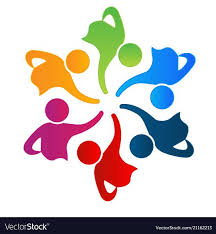
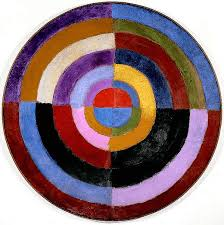
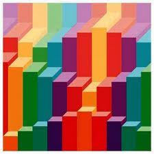

Kesatuan(Unity)
Prinsip Kesatuan(Unity) adalah wadah unsur – unsur
lain di dalam seni rupa sehingga unsur – unsur seni rupa
saling berhubungan satu sama lain dan tidak berdiri sendiri.

Keseimbangan (Balance)
Prinsip keseimbangan berhubungan dengan berat ringan nya
suatu karya seni. Karya seni diatur agar mempunyai daya tarik
yang sama di setiap sisinya.

Irama (Rythme)
Irama atau Ryhme merupakan pengulangan satu atau lebih unsur
secara teratur dan terus menerus sehingga mempunyai
kesan bergerak. Pengulangan ini bisa berwujud
bentuk, garis, atau rupa – rupa warna.
